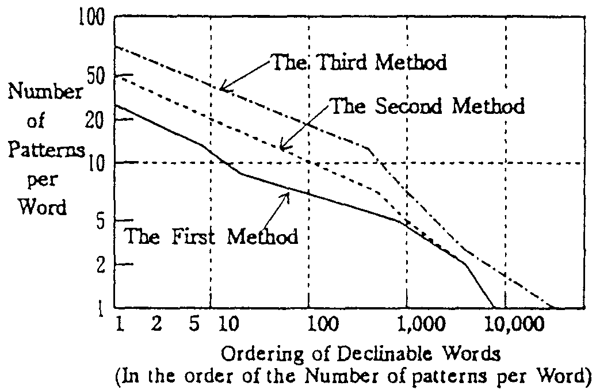

<html>
<head>
<title>Satoshi Shirai, Satoru Ikehara, Akio Yokoo &amp; Hiroko Inoue, NLPRS '95, December 4-7, 1995</title>
<meta http-equiv="content-type" content="text/html; charset=latin-1">
</head>

<body bgcolor=#ffffff link=#0000ff vlink=#0000ff alink=#0000ff>

<div align=center>
<font size=+3>The Quantity of Valency Pattern Pairs required for Japanese to English MT and Their Compilation</font>
<br><br>

<font size=+2>Satoshi Shirai<sup>*</sup>, Satoru Ikehara<sup>*</sup>, Akio Yokoo<sup>*</sup> and Hiroko Inoue<sup>**</sup></font>
<br><br>

<font size=+1><sup>*</sup> NTT Communication Science Laboratories</font>
<br>
<font size=+1>Take 1- 2356, Yokosuka- shi, Japan</font>
<br><br>

<font size=+1><sup>**</sup> NTT Advanced Technology Corporation</font>
<br>
<font size=+1>Kawakami-chou 90-6, Totsuka-ku, Yokohama-shi, Japan</font>
<br><br>

<font size=+1> (E-mail: <tt>{shirai,ikehara,ayokoo}@nttkb.ntt.jp</tt>, <tt>inoue@totsuka.natc.co.jp</tt>)</font>
</div>

<br><br>

<h2>Abstract</h2>
<p>
In order to realize the valency pattern method, which is used in the
semantic analysis of co-occurrence of verbs and nouns, this paper
tested some methods of collectively gathering these patterns and
clarified the number of pattern pairs needed for machine
translation. The experiments showed that the most of the pattern pairs
needed could be collected by using example sentence pairs that had
been generated by human power by relying on existing knowledge
compiled in dictionaries for human use and his personal knowledge.
</p>
<p>
Specifically, three methods were examined. The results showed that
Japanese to English machine translation required about 7,500 pattern
pairs to cover the 1,000 Japanese origin verbs that were critical to
differentiated translation. 15,000 example sentence pairs were needed
to be prepared to collect these pattern pairs. It was also predicted
that about 25,000 pattern pairs would be required to cover all
Japanese predicates including verbs of Chinese origin and idiomatic
expressions of declinable word type, Furthermore, the method of
preparing example seniences through human knowledge was shown to be
entirely feasible,
</p>

<br><br>

<div align=center>
<font size=-1>
[ <i>NLPRS '95</i>, Vol.1, pp.443-448 (December, 1995). ]
</font>
</div>

<br><br>
<br><br>

<hr size=2>

<h3>INDEX</h3>
<table border=0 cellpadding=0>
<tr><td rowspan=14>&nbsp;&nbsp;&nbsp;&nbsp;</td>
    <td><a href="c11.html#chap-1.">1. Introduction</a></td></tr>
<tr><td><a href="c11.html#chap-2.">2. Prerequisites for Pattern Pair Collection</a></td></tr>
<tr><td>&nbsp;&nbsp;<a href="c11.html#chap-2.1">2.1 Framework of Pattern Pair Descriptions</a></td></tr>
<tr><td>&nbsp;&nbsp;<a href="c11.html#chap-2.2">2.2 Computer Support for Pattern Pair Collection</a></td></tr>
<tr><td><a href="c11.html#chap-3.">3. Pattern Pair Collection Method</a></td></tr>
<tr><td>&nbsp;&nbsp;<a href="c11.html#chap-3.1">3.1 Method of Referring to a Japanese-English Dictionary</a></td></tr>
<tr><td>&nbsp;&nbsp;<a href="c11.html#chap-3.2">3.2 Method of Referring to Meanings in Japanese Dictionaries</a></td></tr>
<tr><td>&nbsp;&nbsp;<a href="c11.html#chap-3.3">3.3 Method based on Human Knowledge</a></td></tr>
<tr><td><a href="c11.html#chap-4.">4. Evaluation of Collected Example Sentences and of Pattern Pairs</a></td></tr>
<tr><td>&nbsp;&nbsp;<a href="c11.html#chap-4.1">4.1 The Quantity of Collected Examples and Pattern Pairs</a></td></tr>
<tr><td>&nbsp;&nbsp;<a href="c11.html#chap-4.2">4.2 Estimation of the Quantity or Pattern Pairs and Example Sentences Required</a></td></tr>
<tr><td><a href="c11.html#chap-5.">5. Conclusion</a></td></tr>
<tr></tr>
<tr><td>&nbsp;&nbsp;<a href="c11.html#ref">References</a></td></tr>
</table>

<br><br>

<hr size=2>

<a name="chap-1."><h2><font color=#ff0000>1. Introduction</font></h2></a>

<p>
In order to improve the quality of machine translation, further
development of semanlic analysis technologies are expected. As one
ofthe technologies of semantic analysis, valency pattern method is
known effective to analyze the meaning relation between verbs and
nouns. However, realization of this method is hindered by the problems
of inaccurate writing patterns and the excessive number of pattern
pairs that must be collected.
</p>
<p>
Regarding the problem of writing pattern accuracy, it has already been
clarified [<a href="c11.html#ref4">Ikehara et al. 93</a>] that the semantic
attributes of Japanese nouns need to be classified into 2,000 or more
categories in order to translate Japanese verbs according by their
meanings.
</p>
<p>
For the problem of pattern pair collection, the quantity of pattern
pairs required has remained unknown. Recently, many methods based on
various heuristics or learning technologies have been proposed. Yet it
is very ditficult to gather sufficient example sentences from existing
documents to learn valency patterns automatically. For example,
Kurohashi et al. proposed a method that can learn valency patterns by
using example sentence pairs and a thesaurus. They pointed out the
possibilities of achieving accuracy levels equivalent or superior to
manual preparation [<a href="c11.html#ref9">Kurohashi et al. 92</a>]. Also,
Almuallim et al. developed an automatic translation rule extraction
method based on automatic learning techniques and showed that several
valency patterns were extracted for every 6 verb from 27 to 80 example
sentence pairs. [<a href="c11.html#ref1">Almuallim et al. 94a</a>, <a
href="c11.html#ref2">94b</a>].
</p>
<p>
These methods assume the existence of a number of example sentences
sufficient for learning. For example, in the case of Japanese to
English machine translation, it is said that 10 million pairs of
example sentences are required in order to automatically generate the
valency pattern pairs needed for verb translation [<a
href="c11.html#ref6">Kaneda et al. 94</a>]. Furthermore, each sentence pair
must have a simple sentence structure consisting of one verb and one
or more nouns. Sentence examples obtained from existing documents tend
to have complicated structures necessitating their simplification.
Collecting such a volume of simplified examples from actual
documentation is al1 but impossible<a name="rfn1" href="c11.html#fn1">*1</a>.
</p>
<p>
Then, this paper focuses on three manual pattern pair preparation
methods and clarifies the number of pattern pairs required for
Japanese to English machine translation.  We examine (1) the method of
making valency patterns from Japanese to English dictionaries, (2) the
method based on the example sentences which correspond to the meanings
of Japanese verbs defined in Japanese dictionaries and (3) the method
based on the example sentencs prepared from human knowledge. 36
Japanese verbs (in this papper, Japanese verbs refer to verbs not of
Chinese origin) will be taken up for example and the number of pattern
pairs obtained for these verbs by the 3 methods will be evaluated.
</p>
<p>
Finally, based on the results of the foregoing experiments, the number
of pattern pairs required for Japanese to English machine translation
will be estimated and how they can be conected will be discussed.
</p>

<br><br>

<hr size=2>

<a name="chap-2."><h2><font color=#ff0000>2. Prerequisites for Pattern Pair Collection</font></h2></a>

<br><br>

<hr size=2>

<a name="chap-2.1"><h2><font color=#ff0000>2.1 Framework of Pattern Pair Descriptions</font></h2></a>

<p>
In order to compile the co-occurrence relations between declinable
words and nouns into valency pattern pairs for machine translation,
the types of declinable words involved and the method used for
semantically categorizing nouns must be determined. Particularly in
the semantic categorization of nouns, the minuteness required for
writing pattern pairs depends on the linguistic pair to be
translated. In the case of Japanese to English machine translation, it
is said that Japanese noun meanings need to be categorized into over
2,000 types in order to write the valency pattern pairs which is
needed for the differentiated translation of Japanese verbs into
corresponding English expressions [<a href="c11.html#ref4">Ikehara 93</a>].
</p>
<p>
This paper will deal with pattern pair preparation methods under the
framework of the Japanese to English Machine Translation System
ALT-J/E [<a href="c11.html#ref3">Ikehara 89</a>] which is regarded as
satisfying the above mentioned requirements.  The ALT's framework for
pattern pair writing is as follows.
</p>
<p>
The ALT's framework of valenvy pattern method consists of a
<i>semantic attribute system</i> and two <i>semantic dicrionaries</i>
(the <i>semantic word dictionary</i> and the <i>semantic structure
dictionary</i>). In the <i>semantic atrribute system</i> , the
semantic use of Japanese nouns is classified into a tree structure
with 12 levels having some 3,000 types of attribute names. The
<i>semantic word dictionary</i> holds the meanings of some 400,000
words described using <i>semantic atrributes</i> (one or more meanings
per word). The <i>semantic structure dictionary</i> pairs the Japanese
valency patterns and the corresponding English sentence
structures. These dictionaries are used to disambiguate the results of
syntax analysis, selection of verb translations, and other semantic
analysis including the selection of noun translations.
</p>
<p>
Pattern pairs in ALT usually consist of declinable words (verbs,
adjectives), noun elements (nouns, noun phrases or their attributes),
adverb elements and aspect information.  Noun elements are described
by using <i>semantic attributes</i> of the minimum depth that still
allows diffierentiated Japanese to English translation of verbs [<a
href="c11.html#ref4">Ikehara 93</a>]. In the case of a noun in case element
(noun+ <i>joshi</i> (post-positional word)) that cannot be represented
by <i>semantic atrributes</i>, the noun itself is used. Patterns in
which all of the noun elements in cases are represented by semantic
atrributes are called <i>general patterns</i>. Patterns in which one
or more noun of case elements are fixed are called <i>idiomatic
patterns</i><a name="rfn2" href="c11.html#fn2"><sup>*1</sup></a>. <i>Idiomatic
patterns</i> are used for fixed form of Japanese expressions such as
figurative expressions. This paper will deal with the collection of
<i>general pattern pairs</i>.
</p>
<p>
Valency pattems are prepared for each declinable word functioning as
predicates. The Japanese language allows nouns to become
predicates. In such cases, patterns are prepared with nouns as the
predicates. For example, the "Noun + <i>da</i> $B$@(B(or <i>desu</i> $B$G$9(B)
" form of Japanese predicate nouns is generally translated into
English as noun compliments. In contrast, there are instances where
predicate nouns cannot be translated into a noun compliment in English
such as "<i>Kyo-wa hare-da</i>.: $B:#F|$O@2$l$@!#(B(It is fine today.)" or
"<i>Anata-ni shitsumon-desu</i>.: $B$"$J$?$K<ALd$G$9!#(B (I ask you a
question.)". There are also instances where predicates happen to be
compound words such as X-<i>wa</i> Y-<i>shidai-da</i>.: $B#X$O#Y<!Bh$@!#(B 
(X depends on Y)". Pattern pairs are also prepared in such instances.
</p>

<br><br>

<hr size=2>

<a name="chap-2.2"><h2><font color=#ff0000>2.2 Computer Support for Pattern Pair Collection</font></h2></a>

<p>
In the case of newly making patterns, we must find pattern pair
candidates from example sentences. In the case of adding new panern
pairs to existing patterns, we must find pattern shortages and after
adding new patterns we must verify inconsistencies between added
patterns and existing patterns. A computer supporting system is
required to efficiently perform these processes.
</p>
<p>
<strong>(1) Support for Pattern Pair Generation</strong>
</p>
<p>
It is known that most pattern pair structures for Japanese to English
machine translation can be described using 10 templates [<a
href="c11.html#ref11">Yokoo et al. 94</a>]. Therefore, by using these
templates and specifying pattern elements of the Japanese and English
from example sentences, most valency patterns can easily be
prepared. Unfortunately, in preparing high quality patterns of a high
level of generality, describing the noun elements that determine the
scope of pattern application poses a major problem. To alleviate this
problem, a computer support system was developed in ALT. This system
combined the noun elements used in the examples and the semantic word
dictionary to generate candidates of semantic attributes to be
specified as noun elements and displays them to the analyst.
</p>
<p>
For example, when the example sentence of "<i>Kare-wa
denwa-wo hiita</i>.: $BH`$OEEOC$r0z$$$?!#(B (He installed a
telephone)" is given, the sentence pattern "X (subject)
install a telephone" is generated. The support system looks
up the semantic word dictionary and also displays the
semantic attribute of the noun "telephone". The analyst
observes this and can prepare a pattern by replacing.
"telephone" with a more generally used semantic attribute,
but can also register this without change in the dictionary.
If it is registered in the original form, when the example of
the Japanese verb <i>hiku</i> $B0z$/(B with" the meaning of "install"
as an English verb is added afterward, the support system
will display the semantic attribute of accusative case nouns
once again so that the analyst can convert patterns to more
general forms at this time. With the increase of the number
of examples, the accuracy of semantic attribute candidates
will improve.
</p>
<p>
<strong>(2) Support for Mutual Checking of Patteru Pairs</strong>
</p>
<p>
Valency patterns are registered using predicates as index words so
that there can be no mutual interference between patterns with
differing index words. Thus, mutual inconsistencies between patterns
can be checked by the translation experiment between examples having
identical index words. ALT therefore, has developed the following
semi-automatic mechanism to support mutual inconsistency checks
between patterns.
</p>
<p>
After the process mentioned in (1), the example sentences used in
pattern preparation and the results of related machine translalion are
kept in a file. When a new pattern is generated <hr size=2 width=40%
align=left>
</p>
<p>
second time through process (1), the new pattern is provisionally
registered and thereafier, translation experiments are conducted with
existing examples having identical index words. The results are
compared with translation results achieved in the past and the
examples showing differences are output together with the pattern
pairs used for the translation in question. The analyst observes these
and decides regarding final registration ofthe new pattern. In some
cases, inconsistency checks shows the need for revision of not only
new patterns, but also existing ones. Revisions of patterns are
conducted by reverting to process (1).
</p>

<br><br>

<hr size=2>

<a name="chap-3."><h2><font color=#ff0000>3. Pattern Pair Collection Method</font></h2></a>

<br><br>

<hr size=2>

<a name="chap-3.1"><h2><font color=#ff0000>3.1 Method of Referring to a Japanese-English Dictionary</font></h2></a>

<p>
<strong>(1) Pattern Pair Collection Method</strong>
</p>
<p>
Let's consider the use of conventional Japanese-English dictionaries
for the first method. Japanese-English dictionaries for human use list
the meanings of Japanese declinable words together with the
corresponding verbs, phraseology, and example sentences in
English. Therefore, analyzing the phraseology and example sentences
listed in these dictionaries and re-arranging the restrictive
conditions of case elements, adverb elements and other factors on the
Japanese sentence pattern pairs ofJapanese and English can be prepared
manually.
</p>
<p>
For example, in certain Japanese-Engllsh Dictionary [<a
href="c11.html#ref8">Kenkyusha 84</a>], the following is listed as an example
sentence of <i>agaru</i>: $B>e$,$k(B.
</p>
<p>
<table border=0 cellpadding=1 cellspacing=1>
<tr><td rowspan=3>&nbsp;&nbsp;</td><td>Kare-no</td>
    <td>gakko-no</td><td>seiseki-ga</td><td>agatta</td></tr>
<tr><td>$BH`$N(B</td><td>$B3X9;$N(B</td><td>$B@.@S$,(B</td><td>$B>e$,$C$?!#(B</td></tr>
<tr><td colspan=7>(His school record has improved.)</td></tr>
</table>
</p>
<p>
Analysis of the elements of this sentence with additional certain
information results in the pattern pairs shown in Fig.1.
</p>

<p>
<table border=3 cellpadding=1 cellspacing=1 align=center>
<tr><td>
<table border=0 cellpadding=1 cellspacing=1>
<tr align=center><td colspan=2><u>Japanese Pattern<u></td><td rowspan=5>&nbsp;&nbsp;</td>
    <td colspan=2><u>English Pattern</u></td></tr>
<tr><td>$B(((B</td><td>X:(result ability) $B$,(B "ga"</td>
    <td>$B(((B</td><td>SUBJ X</td></tr>
<tr><td>$B('(B</td><td>Y:(quantity) $B$+$i(B "kara"</td>
    <td>$B('(B</td><td>VP "improve"</td></tr>
<tr><td>$B('(B</td><td>Z:(quantity) $B$^$G(B "made"</td>
    <td>$B('(B</td><td>PP "from" Y</td></tr>
<tr><td>$B(&(B</td><td>$B>e$,$k(B "agaru"</td><td>$B(&(B</td>
    <td>PP "to" Z</td></tr>
</table>
</td></tr>
</table>
<div align=center><strong>
Fig.1 Example Pattern Pair obtained from Dictionaries for Human Use
</strong></div>
</p>

<p>
Several Japanese-English dictionaries [<a href="c11.html#ref7">Kenkyusha
74</a>, <a href="c11.html#ref8">84</a>] were used in this study for the
preparation of pattern pairs<a name="rfn3"
href="c11.html#fn3"><sup>*1</sup></a>.
</p>
<p>
<strong>(2) The Quantity of Collected Pattern Pairs</strong>
</p>
<p>
Pattern pairs obtained by the above method inilially amounted to
10,000 general patterns and 5,000 idiomatic patterns. Subsequent
reviews showed that some of the general patterns could be unified,
while some of the idiomatic patterns could be converted into general
patterns.  Consequently, the total number of pattern pairs collected
from dictionaries amounted to 10,000 patterns for general expressions
and 3,000 patterns for idiomatic expressions.
</p>
<p>
<strong>(3) Sufficiency Check by Translation Experiments</strong>
</p>
<p>
Using the patterns described above, translation experiments were
conducted on the document of specifications (1,361 sentences) for
information processing devices. The results showed that the test
sentences contained 142 different declinable words and 201 valency
patterns were needed to translate them. However only 120 declinable
words and 154 valency patterns for them had been prepared in the
dictionary. It was found that no pattern pair was prepared for 22
declinable words (22/142= 15%) in the test sentences and that there
was a shortfall of 25 patterns for prepared 23 declinable words. The
shortfall of pattern pairs amount 23% ((201-154)/201).
</p>

<br><br>

<hr size=2>

<a name="chap-3.2"><h2><font color=#ff0000>3.2 Method of Referring to Meanings in Japanese Dictionaries</font></h2></a>

<p>
<strong>(1) Method of Example Sentence Collection</strong>
</p>
<p>
As observed in the previous section, some Japanese verbs have so many
meanings that collectlng a sufficient number of translation paiterns
is no easy task. Regarding this kind of verb, Japanese philologists
(some 20 specialists in all) have been researching the collection and
analysis of example sentences corresponding to verb meanings.
Already, example sentences for each meaning of 861 verbs (only
Japanese example sentences, however) have been compiled into the IPAL
Verb Dictionary [<a href="c11.html#ref5">IPAL 87</a>]<a name="rfn4"
href="c11.html#fn4"><sup>*2</sup></a>. In this section, we shall deal with the
conection of pattern pairs from this dictionary as the second method,
</p>
<p>
Eirst, regarding example sentences shown in this dictionary,
translalors were requested to prepare perfectly acceptable English
translations that were as faithful as passible to the original
Japanese. Pattern pairs were collected from Japanese example sentences
and those corresponding translations.
</p>
<p>
<strong>(2) The Quantity or Collected Pattern Pairs</strong>
</p>
<p>
For a total of 861 Japanese verbs, a total of 5,243 example sentence
pairs (37,500 Japanese words and 40,000 English words) were
obtained. Up to now, besides the pattern pairs obtained by the first
method, 1,290 new pattern pairs were collected from 4,500 example
sentences for 740 verbs, while 410 of the pattern pairs created by the
first method have undergone revision.
</p>
<p>
<strong>(3) Correspondence between Meanings and Patterns</strong>
</p>
<p>
The IPAL Verb Dictionary yields examples based on categories of
meanings of the Japanese verbs prepared therein. Thus, when
considering pattern pairs for Japanese to English translation, it was
found that the relation between Japanese verb meanings and pattern
pairs was not always one to one.
</p>
<p>
For example, 4 Japanese verbs which typically have.  numerous meanings
were selected. The corresponding relationship between their meanings
and pattern pairs are shown in Table 1.
</p>

<p>
<div align=center><strong>
Table 1. Correspondence between Valency Patterns and Meanings of a IPAL word
</strong></div>
<table border=3 cellpadding=1 cellspacing=1 align=center>
<tr align=center>
    <td rowspan=2>
	<table border=0 cellpadding=1 cellspacing=1>
	<tr><td rowspan=2><font color=c0c0c0 size=+2>$B!@(B</font></td>
	    <td colspan=2 align=right>Classification</td></tr>
	<tr><td><font size=-2 color=c0c0c0>-------------</font></td>
	    <td rowspan=2><font color=c0c0c0 size=+2>$B!@(B</font></td></tr>
	<tr><td colspan=2>Verb</td></tr>
	</table>
    </td>
    <td colspan=5>Relation between Meanings and Patterns</td><td rowspan=2>Total</td></tr>
<tr align=center><td>1$B"*(B1</td><td>1$B"*(Bn</td><td>m$B"*(B1</td><td>m$B"*(Bn</td><td>?</td></tr>
<tr align=right><td align=left>$B$"$,$k(B "agaru"</td>
    <td>8</td><td>5</td><td>1</td><td>3</td><td>1</td><td>18</td></tr>
<tr align=right><td align=left>$B$"$2$k(B "ageru"</td>
    <td>14</td><td>2</td><td>1</td><td>1</td><td>3</td><td>21</td></tr>
<tr align=right><td align=left>$B$@$9(B "dasu"</td>
    <td>8</td><td>9</td><td>5</td><td>4</td><td>1</td><td>27</td></tr>
<tr align=right><td align=left>$B$G$k(B "deru"</td>
    <td>13</td><td>3</td><td>10</td><td>4</td><td>2</td><td>32</td></tr>
<tr align=right><td align=center>Total<br>%</td>
    <td>43<br>43.9</td><td>19<br>19.4</td><td>17<br>17.3</td>
    <td>12<br>12.2</td><td>7<br>7.1</td><td>98<br>100</td></tr>
</table>
</p>

<p>
This table shows that only some forty percent had a one to one
relationship. This means that from the viewpoint of Japanese to
English translation, the categorization of meanings in the IPAL
dictionary is not necessarily appropriate in terms of translalion into
English.
</p>

<br><br>

<hr size=2>

<a name="chap-3.3"><h2><font color=#ff0000>3.3 Method based on Human Knowledge</font></h2></a>

<p>
<strong>(1) Method of Example Sentence Collection</strong>
</p>
<p>
From the above results, it can be understood that using examples taken
from both Japanese-English dictionaries and Japanese dictionaries for
human use yields an insufficient number of pattern pairs. Consider the
relationship between Japanese example sentences and pattern pairs; it
can be realized that when there is a difference in the nuance of verb
usage, a new and separate English pattern becomes necessary even when
using the same verb. Thus, we propose the third method in which some
Japanese with a competent capability of understanding the English
language refers to various dictionaries, draws upon their own
knowledge, and tries to write down a full collection of example
sentences by listing Japanese usages with differing nuances.
</p>
<p>
The range of examples produced would depend on the time allowed for
thinking, but it was decided that production would continue until
further effort would be unproductive. It was decided that the target
number of the exmaple sentences would be 3 to 4 times the number of
meanings in the IPAL Verb Dictionary based on the results of a
trial. The English translations of the Japanese example sentences were
entrusted to translation specialists.
</p>
<p>
<strong>(2) The Quantity of Collected Pattern Pairs</strong>
</p>
<p>
We applied the above methods and conected 300 verbs (these verbs are
covered by 450 by Kanji ideograms and express 1,700 meanings) and
5,200 examples (33,000 Japanese words, 17,000 English words); the time
spent amounted to about six man months<a name="rfn5"
href="c11.html#fn5"><sup>*1</sup></a>.
</p>
<p>
From the example sentences collected for 36 verbs (1,100 example
sentences), 300 new patterns were generated. This means that the
average of 10 additional pattern pairs for every verb could be
generated by the third method.
</p>

<br><br>

<hr size=2>

<a name="chap-4."><h2><font color=#ff0000>4. Evaluation of Collected Example Sentences and of Pattern Pairs</font></h2></a>

<br><br>

<hr size=2>

<a name="chap-4.1"><h2><font color=#ff0000>4.1 The Quantity of Collected Examples and Pattern Pairs</font></h2></a>

<p>
36 Japanese verbs were selected at random from the result obtained by
the three methods discussed in Chapter 3. Table 2 shows a comparison
of the number of examples obtained and the number of resulting pattern
pairs for these verbs. This table reveals the following.
</p>
<p>
<table border=0 cellpadding=1 cellspacing=1>
<tr valign=top><td rowspan=2>&nbsp;&nbsp;</td>
    <td>1)</td><td>&nbsp;</td>
    <td>When the second method is used in addition to the first method,
	about double the number of pattern pairs can be collected.</td></tr>
<tr valign=top>
    <td>2)</td><td></td>
    <td>When the third method was used in addition to the first and
	second methods, the pattern pair number doubled again.</td></tr>
</table>
</p>

<p>
<div align=center><strong>
Table 2. Comparison of the Number of Collected Pattern Pairs for Japanese origin Verbs
</strong></div>
<table border=0 cellpadding=1 cellspacing=1 align=center>
<tr><td>
<table border=3 cellpadding=1 cellspacing=1 align=center>
<tr align=center>
    <td rowspan=2 colspan=2>
	<table border=0 cellpadding=1 cellspacing=1>
	<tr><td colspan=2>Verbs</td>
	    <td align=right colspan=2><font color=a0a0a0>$B!@(B</font>Method</td></tr>
	<tr><td colspan=3 align=right><font color=a0a0a0>-----------------------------$B!@(B</font>&nbsp;&nbsp;&nbsp;&nbsp;&nbsp;</td></tr>
	<tr><td>IPAL prescription</td>
	    <td><font color=a0a0a0>$B!@(B</font></td>
	    <td>Chinese prescrip<font color=a0a0a0>$B!@(B</font></td></tr>
	</table>
    </td>
    <td>First Method</td><td colspan=3>Second Method</td><td colspan=2>Third Method</td>
    <td rowspan=2>Total num of Ptrn</td><td rowspan=2>c.f. Idiomatic Ptrn</td></tr>
<tr align=center><td>PO</td><td>MW</td><td>EO</td><td>AP</td><td>EW</td><td>AP</td></tr>
<tr align=right>
    <td align=left>$B$G$k(B "deru"</td><td align=left>$B=P$k(B</td>
    <td>22</td><td>32</td><td>49</td><td>5</td>
    <td>145</td><td>38</td><td>65</td><td>18</td></tr>
<tr align=right>
    <td align=left>$B$@$9(B "dasu"</td><td align=left>$B=P$9(B</td>
    <td>16</td><td>27</td><td>53</td><td>15</td>
    <td>95</td><td>22</td><td>53</td><td>21</td></tr>
<tr valign=top align=right>
    <td rowspan=3 align=left>$B$"$1$k(B "akeru"</td><td align=left>$BL@$1$k(B</td>
    <td>4</td><td rowspan=3>11</td><td rowspan=3>17</td><td>1</td>
    <td>14</td><td>5</td><td>10</td><td>0</td></tr>
<tr align=right><td align=left>$B6u$1$k(B</td>
    <td>4</td><td>0</td><td>9</td><td>2</td><td>6</td><td>1</td></tr>
<tr align=right><td align=left>$B3+$1$k(B</td>
    <td>3</td><td>1</td><td>9</td><td>2</td><td>6</td><td>1</td></tr>
<tr align=right valign=top>
    <td rowspan=4 align=left>$B$?$D(B "tatsu"</td><td align=left>$BN)$D(B</td>
    <td>5</td><td rowspan=4>13</td><td rowspan=4>24</td><td>4</td><td>75</td>
    <td>30</td><td>39</td><td>11</td></tr>
<tr align=right><td align=left>$BH/$D(B</td>
    <td>2</td><td>0</td><td>6</td><td>1</td><td>3</td><td>0</td></tr>
<tr align=right><td align=left>$B7z$D(B</td>
    <td>1</td><td>0</td><td>5</td><td>0</td><td>1</td><td>0</td></tr>
<tr align=right><td align=left>$B7P$D(B</td>
    <td>2</td><td>0</td><td>3</td><td>0</td><td>2</td><td>0</td></tr>
<tr align=right valign=top>
    <td align=left rowspan=2>$B$"$/(B "aku"</td><td align=left>$B6u$/(B</td>
    <td>4</td><td rowspan=2>10</td><td rowspan=2>12</td><td>4</td>
    <td>13</td><td>4</td><td>12</td><td>1</td></tr>
<tr align=right><td align=left>$B3+$/(B</td>
    <td>5</td><td>2</td><td>12</td><td>4</td><td>11</td><td>0</td></tr>
<tr align=right valign=top>
    <td rowspan=2 align=left>$B$?$F$k(B "tateru"</td><td align=left>$BN)$F$k(B</td>
    <td>8</td><td>9</td><td rowspan=2>17</td><td>7</td>
    <td>69</td><td>29</td><td>44</td><td>7</td></tr>
<tr align=right><td align=left>$B7z$F$k(B</td>
    <td>1</td><td>1</td><td>0</td><td>5</td><td>0</td><td>1</td><td>0</td></tr>
<tr align=right><td align=left>$B$"$2$k(B "ageru"</td><td align=left>$B>e$2$k(B</td>
    <td>8</td><td>21</td><td>31</td><td>13</td>
    <td>98</td><td>16</td><td>37</td><td>14</td></tr>
<tr align=right valign=top>
    <td align=left rowspan=2>$B$?$D(B "tatsu"</td><td align=left>$BCG$D(B</td>
    <td>4</td><td>1</td><td rowspan=2><br></td><td>0</td>
    <td>6</td><td>1</td><td>5</td><td>0</td></tr>
<tr align=right><td align=left>$B@d$D(B</td>
    <td>4</td><td>3</td><td>0</td><td>6</td><td>2</td><td>6</td><td>0</td></tr>
<tr align=right><td align=left>$B$*$A$k(B "ochiru"</td><td align=left>$BMn$A$k(B</td>
    <td>8</td><td>11</td><td>21</td><td>7</td>
    <td>53</td><td>23</td><td>38</td><td>1</td></tr>
<tr align=right><td align=left>$B$"$,$k(B "agaru"</td><td align=left>$B>e$,$k(B</td>
    <td>7</td><td>18</td><td>31</td><td>16</td>
    <td>90</td><td>16</td><td>39</td><td>12</td></tr>
<tr align=right><td align=left>$B$O$$$k(B "hairu"</td><td align=left>$BF~$k(B</td>
    <td>7</td><td>23</td><td>34</td><td>11</td>
    <td>105</td><td>31</td><td>49</td><td>5</td></tr>
<tr align=right><td align=left>$B$*$H$9(B "otosu"</td><td align=left>$BMn$H$9(B</td>
    <td>6</td><td>14</td><td>19</td><td>5</td>
    <td>53</td><td>15</td><td>26</td><td>3</td></tr>
<tr align=right><td align=left>$B$$$l$k(B "ireru"</td><td align=left>$BF~$l$k(B</td>
    <td>5</td><td>19</td><td>30</td><td>12</td>
    <td>113</td><td>28</td><td>45</td><td>10</td></tr>
<tr align=right><td align=left>$B$/$:$9(B "kuzusu"</td><td align=left>$BJx$9(B</td>
    <td>6</td><td>4</td><td>4</td><td>2</td>
    <td>8</td><td>2</td><td>10</td><td>0</td></tr>
<tr align=right><td align=left>$B$/$:$l$k(B "kuzureru"</td><td align=left>$BJx$l$k(B</td>
    <td>5</td><td>4</td><td>6</td><td>2</td>
    <td>13</td><td>4</td><td>11</td><td>0</td></tr>
<tr align=right valign=top><td align=left>$B$&(B($B$:(B)$B$a$k(B</td><td align=left>$BKd$a$k(B</td>
    <td rowspan=3>3</td><td></td><td></td><td rowspan=3>1</td>
    <td rowspan=3>9</td><td rowspan=3>0</td><td rowspan=3>4</td><td rowspan=3>1</td></tr>
<tr align=right><td align=center>"umeru"</td><td align=left>$B$&$a$k(B</td>
    <td>4</td><td>5</td></tr>
<tr align=right><td align=center>"uzumeru"</td><td align=left>$B$&$:$a$k(B</td>
    <td>4</td><td>4</td></tr>
<tr align=right><td align=left>$B$-$a$k(B "kimeru"</td><td align=left>$B7h$a$k(B</td>
    <td>3</td><td>14</td><td>20</td><td>4</td>
    <td>28</td><td>5</td><td>12</td><td>0</td></tr>
<tr align=right><td align=left>$B$5$1$k(B "sakeru"</td><td align=left>$BHr$1$k(B</td>
    <td>3</td><td>6</td><td>11</td><td>0</td>
    <td>9</td><td>2</td><td>5</td><td>0</td></tr>
<tr align=right><td align=left>$B$-$^$k(B "kimaru"</td><td align=left>$B7h$^$k(B</td>
    <td>3</td><td>8</td><td>17</td><td>2</td>
    <td>32</td><td>10</td><td>15</td><td>2</td></tr>
<tr align=right><td align=left>$B$5$/(B "saku"</td><td align=left>$B3d$/(B</td>
    <td>2</td><td>5</td><td>7</td><td>0</td>
    <td>4</td><td>2</td><td>4</td><td>0</td></tr>
<tr align=right><td align=left>$B$5$/(B "saku"</td><td align=left>$BNv$/(B</td>
    <td>1</td><td><br></td><td><br></td><td>5</td>
    <td>3</td><td>0</td><td>6</td><td>0</td></tr>
<tr align=right valign=top>
    <td align=left>$B$&(B($B$:(B)$B$^$k(B</td><td align=left>$BKd$^$k(B</td>
    <td rowspan=3>2</td><td></td><td></td><td rowspan=3>2</td>
    <td rowspan=3>5</td><td rowspan=3>1</td><td rowspan=3>5</td><td rowspan=3>0</td></tr>
<tr align=right><td align=center>"umaru"</td><td align=left>$B$&$^$k(B</td>
    <td>5</td><td>6</td></tr>
<tr align=right><td align=center>"uzumaru"</td><td align=left>$B$&$:$^$k(B</td>
    <td>3</td><td>4</td></tr>
<tr align=right><td align=left>$B$5$1$k(B "sakeru"</td><td align=left>$BNv$1$k(B</td>
    <td>1</td><td>1</td><td>3</td><td>2</td>
    <td>4</td><td>1</td><td>4</td><td>0</td></tr>
<tr align=right><td align=left>$B$5$/(B "saku"</td><td align=left>$B:i$/(B</td>
    <td>1</td><td>1</td><td>1</td><td>0</td>
    <td>3</td><td>2</td><td>3</td><td>0</td></tr>
<tr align=right><td colspan=2 align=center>Total</td><td>156</td><td>271</td><td>426</td><td>123</td><td>1102</td><td>298</td><td>577</td><td>108</td></tr>
</table>
</td></tr>
<tr><td>PO: Number of Patterrts Obtained, </td></tr>
<tr><td>MW: Number of Meanings per Word</td></tr>
<tr><td>ES: Number of Examples SEntences,</td></tr>
<tr><td>AP: Number of Added Patterns,</td></tr>
<tr><td>Ptrn.: Patterns</td></tr>
</table>
</p>

<p>
These results indicate that by using human knowledge, we can quadruple
the number of pattern pairs that can be collected by the first method.
</p>

<br><br>

<hr size=2>

<a name="chap-4.2"><h2><font color=#ff0000>4.2 Estimation of the Quantity or Pattern Pairs and Example Sentences Required</font></h2></a>

<p>
<strong>(1) The Estimated Quantity of Pattern Pairs for Japanese origin Verbs</strong>
</p>
<p>
Some experiments using the third method were conducted by different
analysts and revealed that as long as they were competent, the recall
factor of pattern pairs obtained from example sentences prepared by
diifrent analysts exceeded 90%. Thus, the number of pattern pairs for
individual verbs obtained by the third method can be regarded as the
number of pattern pairs necessary for each verb. Based on this result,
the number of pattern pairs required for Japanese verbs in Japanese to
English machine translalion is predicted as follows.
</p>
<p>
First the number of pattern pairs obtained from the first method are
plotted by the bold line in Fig.2. Next, for the 36 verbs taken up in
the preceding chapter, the number of pattern pairs resulting from the
second and third methods are plotted and joined smoothly to form the
dotted and one-point chain lines, respectively.
</p>

<p>
<table border=3 cellpadding=1 cellspacing=1 align=center>
<tr valign=top><td>

</td></tr>
</table>
<div align=center><strong>
Fig.2 Distribution of the Number of Pattern Pairs for Japanese Declinable Words
</strong></div>
</p>

<p>
From this figure, the number o fpattern pairs necessary for Japanese
origin verbs is estimated to be 7,500.
</p>
<p>
<strong>(2) Estimate Quantity of Pattern Pairs for MT</strong>
</p>
<p>
Up to the preceding chapter, discussion has concentrated on general
patterns for Japanese verbs, but pattern pairs should also be prepared
for idiomatic expressions with a declinable word. And in addition to
Japanese verbs, Chinese-origin verbs, adjectives and other types of
predicates must also be considered for forming pattern pairs.
</p>
<p>
Adjective type predicates have characteristics similar to Japanese
verbs and the method prescribed in this paper is considered to be
appropriate for the generation of pattern pairs. The same is
applicable also for idiomatic patterns.  In the case of Chinese-origin
verbs, 1 word relates to about 1 to 2 patterns making it comparatively
easy to collect the patterns needed from dictionaries.
</p>
<p>
An estimate of the number of pattern pairs required for all declinable
words is shown in Table 3. This table also shows an estimate of the
number that can be collected using three methods described in this
paper.
</p>


<p>
<div align=center><strong>
Table 3. The Quantity of Pattern Pairs required in Japanese to English MT and the Way to collect them
</strong></div>
<table border=0 cellpadding=1 cellspacing=1 align=center>
<tr><td colspan=8>
<table border=3 cellpadding=1 cellspacing=1 align=center>
<tr align=center>
    <td rowspan=2 colspan=2>
	<table border=0 cellpadding=1 cellspacing=1>
	<tr><td rowspan=2><font color=a0a0a0 size=+1>$B!@(B</font></td>
	    <td colspan=2 align=right>Comparison</td></tr>
	<tr><td><font size=-2 color=a0a0a0>
		<nobr>---------------------------</nobr></font></td>
	    <td rowspan=2><font color=a0a0a0 size=+1>$B!@(B</font></td></tr>
	<tr><td colspan=2 align=left><nobr>Type of Patterns</nobr></td></tr>
	</table>
    </td>
    <td colspan=2>Required Quantity</td>
    <td colspan=2>Obtained by<br>First Method *</td>
    <td colspan=3>Estimated Quantity by<br>the Second Method</td>
    <td colspan=3>Estimated Quantity by<br>the Third Method</td></tr>
<tr align=center><td>NOIW</td><td>NOPP</td><td>NOIW</td><td>NOPP</td><td>NOCW</td>
    <td>NOES</td><td>NOPP</td><td>NOCW</td><td>NOEW</td><td>NOPP</td></tr>
<tr align=right><td rowspan=4 align=center>General<br>Pattern<br>Pairs</td>
    <td align=left>Japanese origin V.</td>
    <td>1,500</td><td>9,500</td><td>1,500</td><td>4,000</td><td>1,000</td>
    <td>5,200</td><td>1,500</td><td>1,200</td><td>15,000</td><td>4,000</td></tr>
<tr align=right><td align=left>Chinese origtn V.</td>
    <td>7,000</td><td>8,000</td><td>3,000</td><td>4,000</td><td>---</td>
    <td>---</td><td>---</td><td>4,000</td><td>8,000</td><td>4,000</td></tr>
<tr align=right><td align=left>Adjective Equiv.</td>
    <td>2,000</td><td>3,000</td><td>1,100</td><td>2,000</td><td>200</td>
    <td>2,400</td><td>500</td><td>500</td><td>2,000</td><td>500</td></tr>
<tr align=right><td align=center>Total</td>
    <td>10,500</td><td>20,500</td><td>5,600</td><td>10,000</td><td>1,200</td>
    <td>7,600</td><td>2,000</td><td>5,700</td><td>25,000</td><td>8,500</td></tr>
<tr align=right><td colspan=2 align=center>Idionlatic Pattern Pairs</td>
    <td>---</td><td>5,000</td><td>---</td><td>3,000</td><td>---</td>
    <td>---</td><td>---</td><td>---</td><td>unsure</td><td>unsure</td></tr>
<tr align=right><td align=center colspan=2>Total</td>
    <td>10,500</td><td>25,500</td><td>5,600</td><td>13,000</td><td>1,200</td>
    <td>7,600</td><td>2,000</td><td>5,700</td><td>25,000</td><td>8,500</td></tr>
</table>
</td></tr>
<tr><td rowspan=3>&nbsp;&nbsp;</td><td rowspan=2>&nbsp;&nbsp;</td>
    <td>NOIW: Number of Index Words</td><td rowspan=2>&nbsp;&nbsp;</td>
    <td colspan=3>NOPP: Number of Pattern Pairs</td>
    <td rowspan=3>&nbsp;&nbsp;</td></tr>
<tr><td>NOCW: Number of Correspoiding Words</td>
    <td colspan=3>NOES: Number of Examples of Sentences</td></tr>
<tr><td align=right>*</td>
    <td>The number of words as inscribed in Kanji are displayed.</td>
    <td>&nbsp;&nbsp;</td>
    <td>V.: Verb,</td><td>&nbsp;&nbsp;</td>
    <td>Equiv.: Equivalents</td></tr>
</td></tr>
</table>
</p>

<p>
From this table, it may be observed that some 25,000 pattern pairs are
estimated to be necessary for general and idiomatic patterns in
Japanese to English machine trartslation. These patterns can be
collected by relying on the third method, over and above the first and
second methods.
</p>

<br><br>

<hr size=2>

<a name="chap-5."><h2><font color=#ff0000>5. Conclusion</font></h2></a>

<p>
The number of valency pattern pairs for translating the meanings of
declinable words (verbs, adjectives) in Japanese to English machine
translation, together with the ways and means of collecting these,
have been clarified
</p>
<p>
Japanese verbs (rather than those of Chinese-origin) were considered
because their pattern pair preparation has been most difficult due to
the number of meanings for each word, Examinations of collecting
pattern pairs were conducted by the three methods; (1) the method of
collecting patterns from Japanese to English Dictionaries; (2) the
method of using example sentences prepared based on the meanings of
verb in Japanese dictionaries, and (3) the method of preparing example
sentences referring to the above dictionaries and human knowledge. The
example sentences and pattern pairs obtained for 36 Japanese verbs
were compared. The results show that about 7,500 valency patterns are
required in order to translate some 1,000 major verbs of
Japanese-origin into English based on their meanings. It was also
clarified that adding the second method doubles the number of pattern
pairs collected.  Adding the third method doubles the pattern number
again.  Il was furlher showed that for the collective gathering of
necessary pattern pairs, the third method would be the most
appropriate considering the volume of manpower and work hour
commitments involved.
</p>
<p>
It was also predicted that for all pattern pairs in their entirety,
including Chinese-origin verbs and adjective type predicates, some
25,000 patterns would be required.
</p>
<p>
Currently, the second and third methods described in this paper are
being used in parallel. For Japanese verbs, Chinese-origin verbs and
adjective type predicates, 5,000, 4,000, and 2,000 patterns
respectively (totaling 11,000) have been collected. The remaining
pattern pairs (about 9,000 instances of general patterns and 2,000
instances of idiomatic patterns) will be prepared in due course.
</p>

<br><br>

<hr size=2>

<a name="ref"><h2><font color=#ff0000>References</font></h2></a>

<p>
<dl compact>
<dt><a name="ref1"><strong>[Almuallim et al. 94a]</strong></a>
<dd>Almuallim, F., Akiba, Y., Yamazaki, T., Yokoo, A. and Kaneda, S.:
	A Tool for the Acquisition of Japanese to English Machine Translation Rules
	using Inductive Learning Techniques,
	CAIA94, pp,194-201, San Autonio, Texas (199)4
	<br><br>
<dt><a name="ref2"><strong>[Almuallim et al. 94b]</strong></a>
<dd>Almuallim, F., Akiba, Y., Yamazaki, T., Yokoo, A. and Kaneda, S.:
	Two Methods for Learning ALT-J/E Translation Rules from Examples and
	a Semantic Hierarchy,
	COLING94, pp.57-63, Kyoto (1994)
	<br><br>
<dt><a name="ref3"><strong>[Ikehara 89]</strong></a>
<dd>Ikehara, S.:
	Multi-Level Machine Translation System,
	Future Computer System, Vol.2, No.3, pp.261-274 (1989)
	<br><br>
<dt><a name="ref4"><strong>[Ikehara et al. 93]</strong></a>
<dd>Ikehara, S., Miyazaki, M. and Yokoo, A.:
	Classification of Language Knowledge for Meaning Analysis in Machine Translation,
	Trans. IPS Japan, Vol.34, No.8 (1993) (in Japanese)
	<br><br>
<dt><a name="ref5"><strong>[IPAL 87]</strong></a>
<dd>IPA Lexicon of the Japanese Language for Computing (Basic Verbs),
	Technology Center of the Information-technology Promotion Agency,
	Japan (1987) (in Japanese)
	<br><br>
<dt><a name="ref6"><strong>[Kaneda et al. 94]</strong></a>
<dd>Kaneda, S., Akiba, Y., Ishii, M. and Almuallim, F:
	Example based Learning Method to Revise English Verb Selection Rules,
	Symposium on Learning in Natural Language Processing,
	pp.158-165 (1994) (in Japanese)
	<br><br>
<dt><a name="ref7"><strong>[Kenkyusha 74]</strong></a>
<dd>Masuda, K. Editor in Chief:
	"New Japanese English Dictionary - Forth Edition",
	Kenkyusha (1974)
	<br><br>
<dt><a name="ref8"><strong>[Kenkyusha 84]</strong></a>
<dd>Kojima, Y. and Takebayasi, S.:
	Lighthouse Japanese-English Dictionary,
	Second - Edition, Kenkyu-sha (1984)
	<br><br>
<dt><a name="ref9"><strong>[Kurohashi et al. 92]</strong></a>
<dd>Kurohashi, S. and Nagao, M.: On the Effectiveness of Example-based
	Approach to Semantic-marker Approach in the Selection of Japanese Case Frames,
	SIG on Natural Language Processing IPS Japan, NL-91-11 (1992) (in Japanese)
	<br><br>
<dt><a name="ref10"><strong>[Shirai et al. 94]</strong></a>
<dd>Shirai, S., Yokoo, A., Ikehara, S. and Inoue, H.:
	More Detailed Translation Conditions for Japanese to English Semantic
	Structure Dictionaries,
	Proc. 48th Annual Convention IPS Japan, 6Q-9 (1994)
	<br><br>
<dt><a name="ref11"><strong>[Yokoo et al. 94]</strong></a>
<dd>Yokoo, A., Nakaiwa, H., Shirai, S and Ikehara, S.:
	Skeleton-Flesh Type Semantic Structure Dictionaries for Japanese to English
	Machine Translation,
	Proc. 48th Annual Convention IPS Japan, 6Q-8 (1994) (in Japanese)
</dl>

<br><br>

<hr size=2>

<br>

<font color=#ff0000><strong>Footnote</strong></font>

<hr size=2 width=40% align=left>

<a name="fn1">*1</a>
As one means of computerized support, there is support for the work
involved in preparation of pattern pairs which are lacking.  But the
support in verification of mutual inconsistencies in manually prepared
pattern pairs is equally as important. Applied researches in the field
of automatic learning technology is required to develop a mechanism
for logically verifying mutual inconsistencies between pattern pairs
and the semantic attribute system. (<a href="c11.html#rfn1">Return</a>)

<hr size=2 width=40% align=left>

<a name="fn2"><sup>*1</sup></a>
Besides general pattern and idiomatic pattern, ALT has special
patterns for the use of domain secific areas. In this paper, we will
forcus the discussion into generai use. (<a href="c11.html#rfn2">Return</a>)

<hr size=2 width=40% align=left>

<a name="fn3"><sup>*1</sup></a>
In preparation of idiomatic patterns, an idiomatic expressions dictionary were used other than general dictinaries. (<a href="c11.html#rfn3">Return</a>)

<hr size=2 width=40% align=left>

<a name="fn4"><sup>*2</sup></a>
A total of 861 Japanese verbs (however, exppressed in kana writing, ths would be the equivalent of 1,301 words in Kanji writing)
was analyzed. There basic and important verbs wer classified in detail according to their meanings and syntactic characteristics.
For each of these meanings of words, forms, grammatical category, syntactic and semantic use, idiomatic expressions have been
described in as great a detail as possible. 1 to 3 sentences have been appended as exarnples for each meaning. (<a href="c11.html#rfn4">Return</a>)

<hr size=2 width=40% align=left>

<a name="fn5"><sup>*1</sup></a>
In terms of payroll expenditure, the cost for Japanese example sentence preparation is about the equivalent of the cost of
Japarlese to English translation. (<a href="c11.html#rfn5">Return</a>)

<br><br><br><br><br><br><br><br><br><br>
<br><br><br><br><br><br><br><br><br><br>
<br><br><br><br><br><br><br><br><br><br>
<br><br><br><br><br><br><br><br><br><br>
<br><br><br><br><br><br><br><br><br><br>

</body>
</html>
